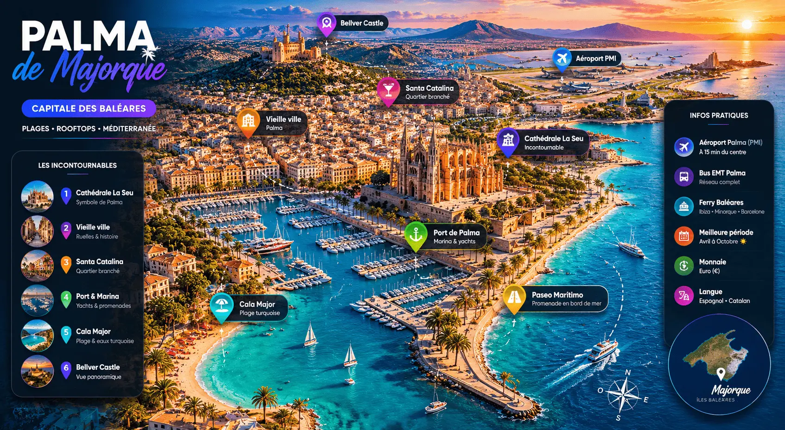

Palma mélange plages turquoise, marina élégante, vieille ville et rooftops avec une atmosphère méditerranéenne premium.
La Seu, Santa Catalina, Cala Major, Bellver Castle et le Paseo Marítimo font partie des lieux les plus populaires.
L’aéroport PMI se trouve à quelques minutes du centre et les lignes EMT permettent de rejoindre facilement plages et quartiers.
Entre avril et octobre, Palma offre soleil, températures agréables et magnifiques couchers de soleil sur la Méditerranée.